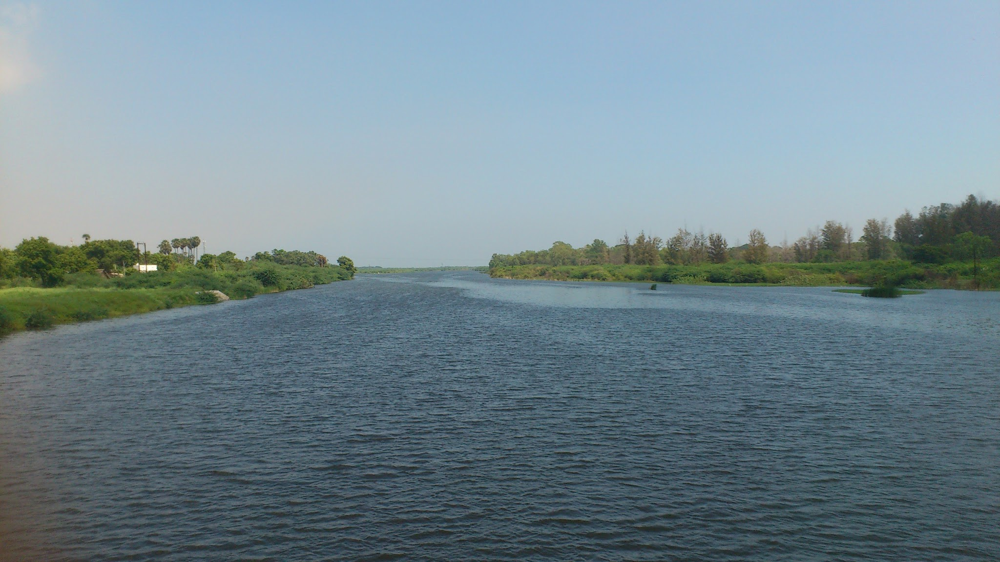

Tirunelveli
Tirunelveli District is a district of Tamil Nadu state in southern India. The city of Tirunelveli is the district headquarters. Tirunelveli District was formed on 1 September 1790by the East India Company (on behalf of the British government), and comprised the present Tirunelveli and Thoothukudi districts and parts of Virudhunagar and Ramanathapuram districts. It is the second-largest district (as of October 2008), after Villupuram district. As of 2011, the district had a population of 3,077,233.The district is located in the southern part of Tamil Nadu. It borders Virudhunagar District to the north, Thiruvananthapuram, Kollam, Pathanamthitta and Idukki districts of Kerala to the west, Kanyakumari District to the south and Thoothukudi District to the east. The district covers an area of 6,823 square kilometres (2,634 sq mi). It lies between 8°05' and 9°30' north latitude and 77°05' and 78°25' east longitude. The district contains mountains (a stretch of the Western Ghats) and lowland plains, including sandy soil and fertile alluvium, and a variety of flora, fauna and protected wildlife. The district also has inland and mountainous forests. Tirunelveli is said to be the only district of Tamil Nadu to have all the five types of ecological zones as described in the ancient Tamil Literature Kurunji (hilly), Mullai (Forest), Marutham (Flat fertile land), Neithal (area forming the seashore) and Palai (Dry desert lands)



1
2
3
4
5
6
7
8